Compilación de plantillas para la página ENARM
17 plantillas de Envato abiertas en Chrome · 36 capturas · base principal: Panel de administración médica. La lista completa numerada (160 elementos) está en elementos-adoptables-enarm.md.
Índice
- Panel de administración médica (Medicial) — base
- Panel de información médica y sanitaria (Abyd Health, modo oscuro)
- Carpenter — Panel de monitoreo IA
- MediFlow — Telemedicina
- Tablero de atención médica (Healty)
- Clinically — Web UI Kit
- Medlink — Panel hospitalario (13 pantallas)
- ADMAX — Panel de administración
- EHR Ehrity — Landing
- Mediplus — Panel sanitario
- Kit de panel de análisis médico
- Plantilla de página de inicio médica
- Panel de salud (verde lima)
- Medicool — Landing
- Ama — Landing médica
- Folleto tríptico médico
- Búsqueda Envato "medical dashboard"
- Mapa de adopción para ENARM
1Panel de administración médica (Evlogy · "Medicial")BASE
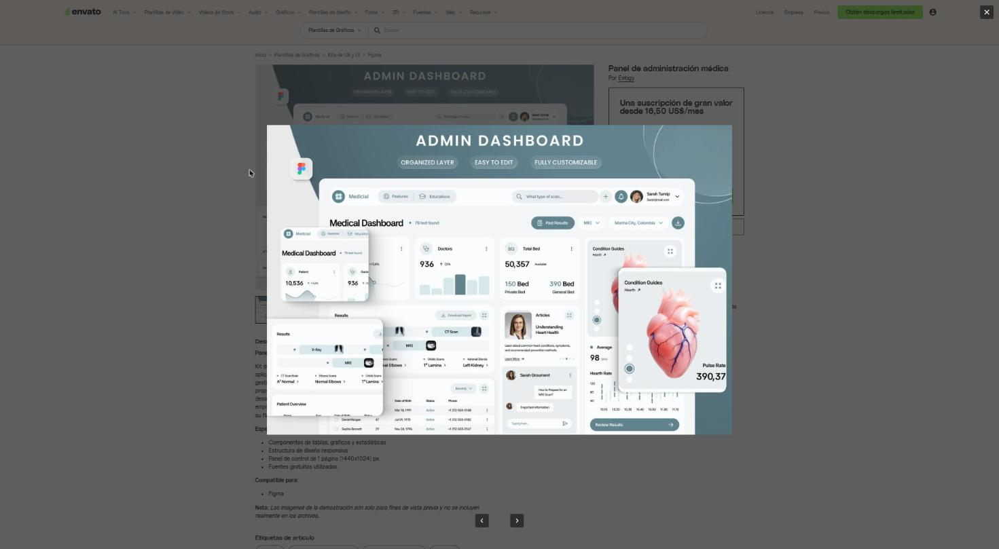
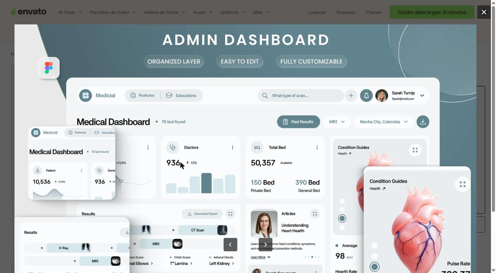
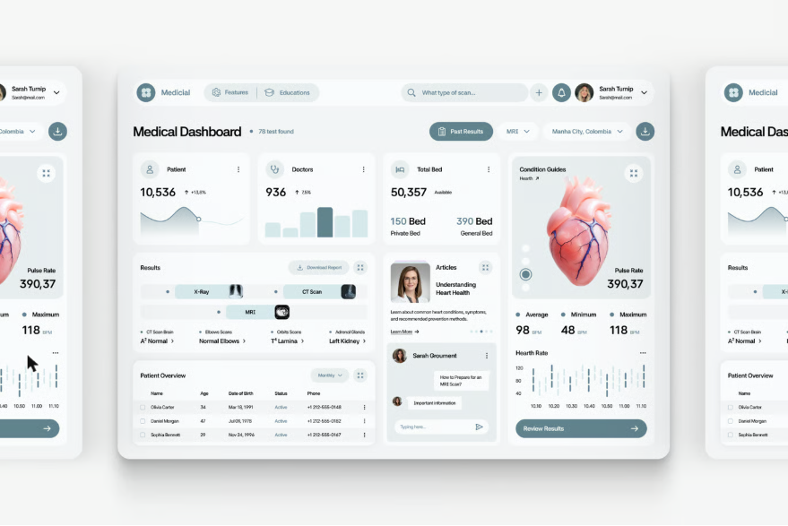
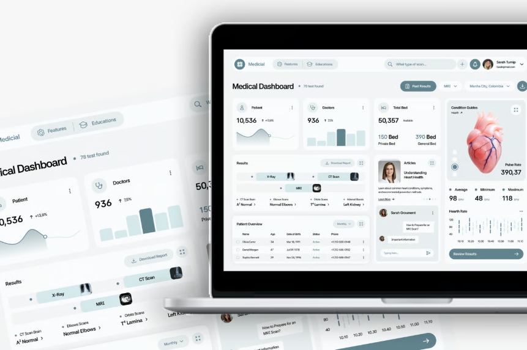
Elementos (34)
- Top bar: logo, nav en píldora con iconos (Features | Educations), buscador global con placeholder contextual, botón "+", campana en círculo, avatar + nombre + correo + chevron.
- Encabezado: título grande + "• 78 test found", botón primario oscuro con icono (Past Results), dropdowns de filtro (MRI, ubicación), botón circular de descarga.
- 4 KPI cards: icono en círculo + etiqueta + ⋮, número grande + delta con flecha, sparkline de área (Patient) / mini barras con barra activa (Doctors), card con dos sub-métricas (150 Bed / 390 Bed), card con visual 3D + expandir.
- Widget Results: botón "Download Report", chips con miniatura (X-Ray, CT Scan, MRI), sub-grid etiqueta → valor + chevron.
- Widget Articles: foto + título + extracto + "Learn More →" + dots de carrusel.
- Chat: avatar + burbujas + input "Typing here..." + enviar.
- Tabla Patient Overview: selector "Monthly", columnas Name/Age/DOB/Status/Phone, checkbox por fila, badge "Active", ⋮ por fila.
- Condition Guides: visual 3D, stepper vertical de puntos, Pulse Rate grande, Average/Minimum/Maximum con punto de color, gráfica de rangos Heart Rate con eje de tiempo, CTA ancho "Review Results →".
- Estilo: fondo gris claro + tarjetas blancas + acento teal/sage, radios 16–20 px, sombras suaves, sans moderna, iconos lineales, chips gris tenue, variantes móvil/tablet.
2Panel de información médica y sanitaria (Visualabs · "Abyd Health")
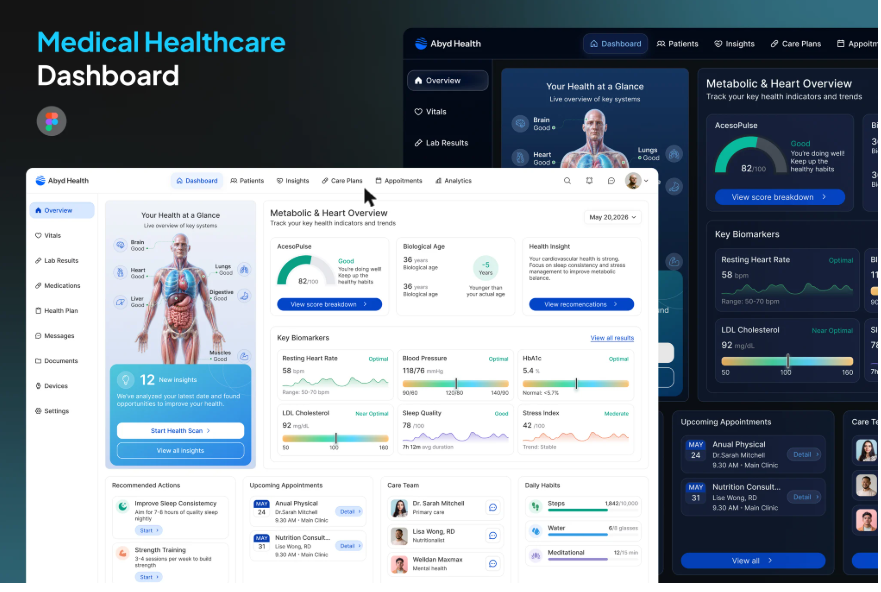
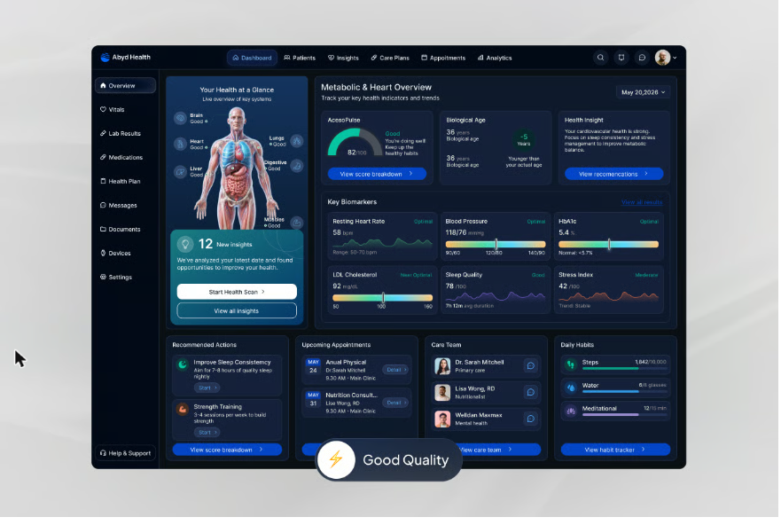
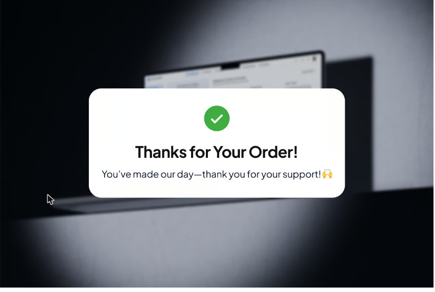
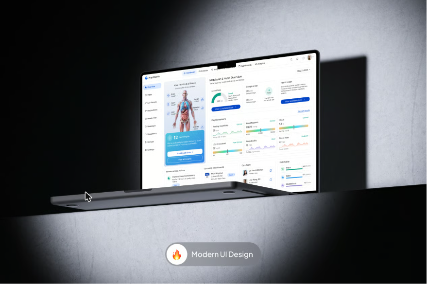
- Sidebar icono + etiqueta con activo resaltado y "Help & Support" al pie.
- Figura anatómica con hotspots (Brain, Heart, Lungs, Liver, Muscles) con estado "Good".
- Tarjeta destacada en color "12 New insights" con dos botones.
- Gauge semicircular con score 82/100 "Good"; tarjeta comparativa Biological Age (-5 años); Health Insight con CTA.
- Grid de biomarcadores: valor + badge Optimal/Near Optimal + mini sparkline + barra de rango gradiente con marcador.
- Recommended Actions (icono + texto + Start), Upcoming Appointments (fecha en badge), Care Team (avatar + chat), Daily Habits (barras con meta).
- Selector de fecha en cabecera; tema oscuro completo; modal centrado con check verde.
3Carpenter — Panel de monitoreo de IA (harukidesign)
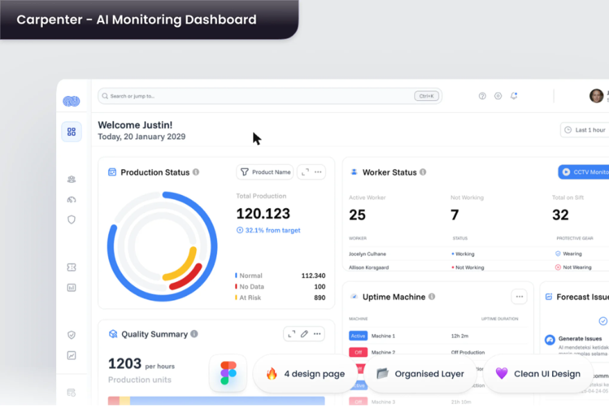
- Buscador con atajo "Ctrl+K"; saludo con fecha; selector "Last 1 hour".
- Donut de anillos anidados con leyenda y "32.1% from target".
- Mini tabla de estados con punto de color + iconos check/x; lista Uptime con badges Active/Off.
- "Forecast Issues" generado por IA; sidebar solo iconos; botones expandir/editar/⋯ por widget.
4MediFlow — Panel de telemedicina (CreateBigSupply)
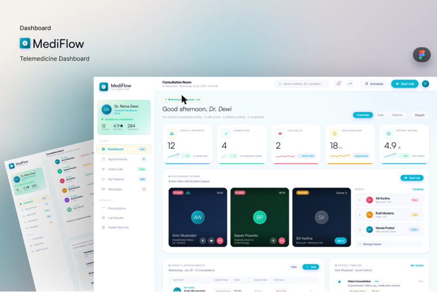
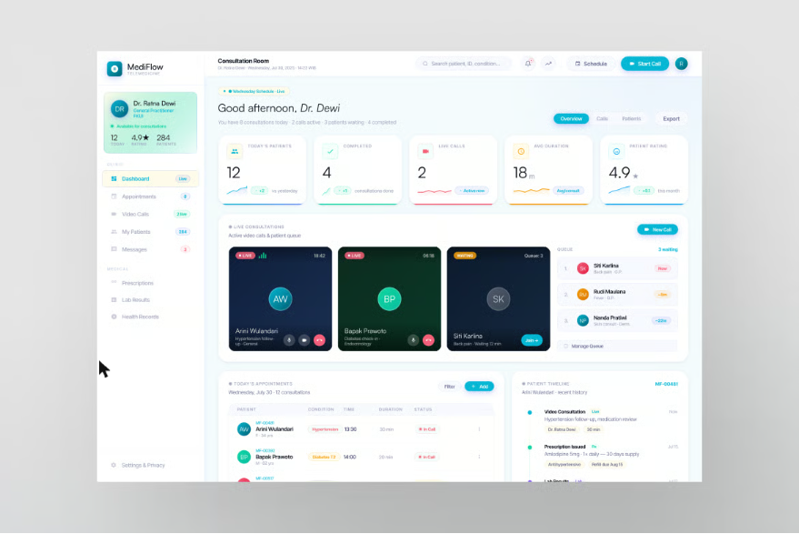
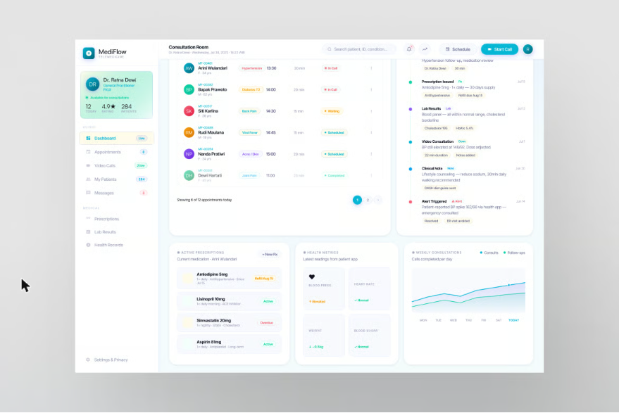
- Perfil en sidebar (avatar, estado "Available", 3 mini-stats); nav con contadores (8, 2 live, 284).
- Saludo + resumen en prosa del día; segmented control Overview/Calls/Patients + Export.
- 5 KPI con sparkline y chip de comparación; tarjetas de video LIVE/WAITING con temporizador; cola con tiempos relativos.
- Tabla con chips de condición, estado In Call/Scheduled/Completed, "Showing 6 of 12" + paginación.
- Timeline vertical con puntos de color; Active Prescriptions (Active/Overdue); Health Metrics tiles; línea semanal comparativa.
- Botones "Start Call" / "Schedule"; etiquetas de sección en mayúsculas con punto de color.
5Tablero de atención médica "Healty" (hapsdesignspace)
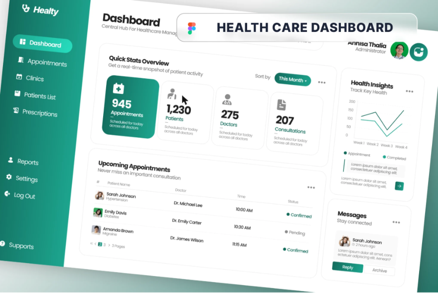
- Sidebar verde sólido con ítem activo blanco; Quick Stats con una tarjeta destacada en color + tres claras.
- Chip "Sort by This Month"; line chart con leyenda; tabla con avatar + sub-línea y badge Confirmed/Pending + paginación "3 Pages".
- Tarjeta Messages con Reply/Archive; usuario con rol "Administrator".
6Clinically — Kit web para salud (illiyinstudio)
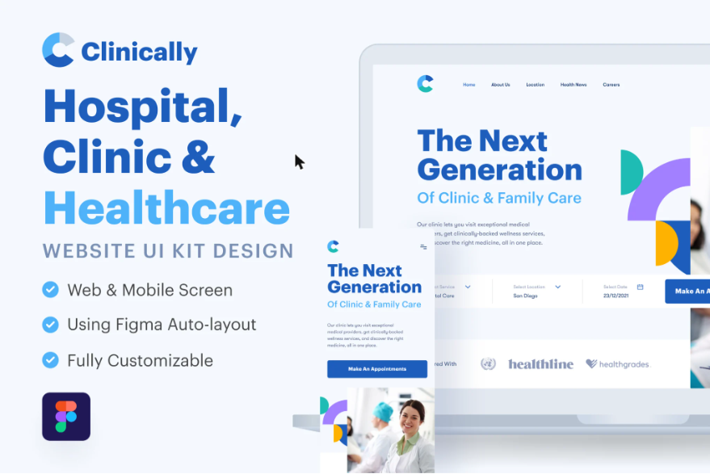
- Hero con titular en dos colores y formas geométricas; buscador de 3 campos (Service · Location · Date) + CTA.
- Logos "Featured with"; checklist de ventajas con check en círculo; vista móvil.
7Medlink — Panel de administración hospitalaria (peterdraw)13 PANTALLAS
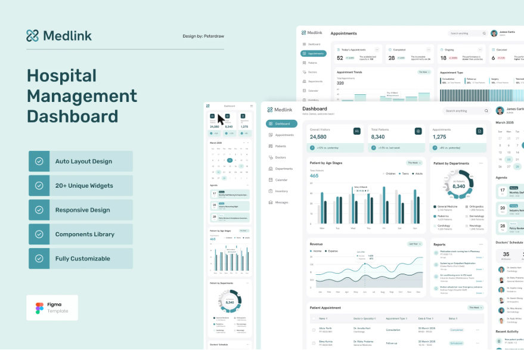
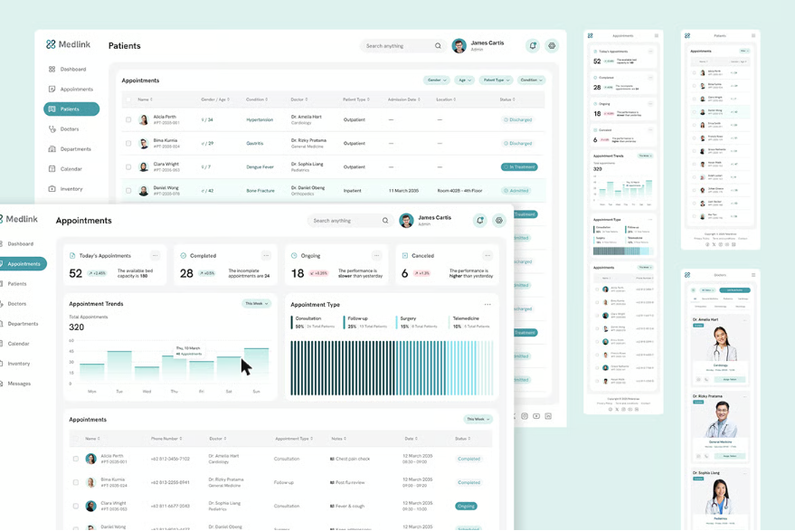
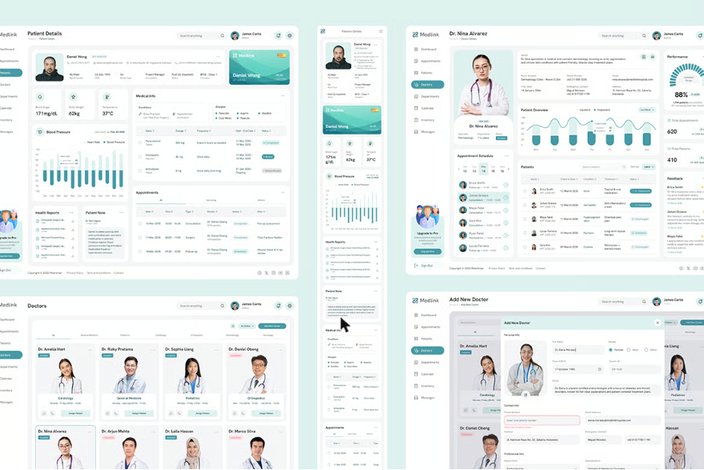
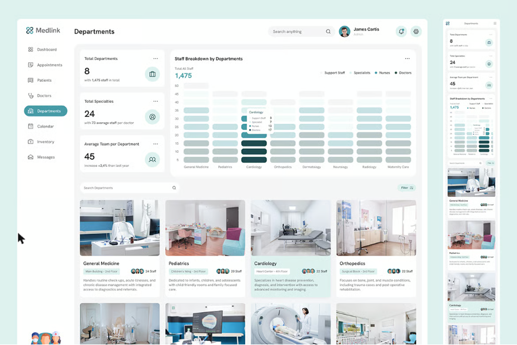
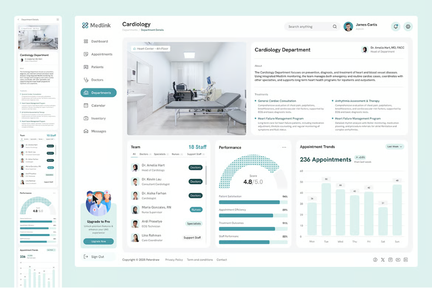
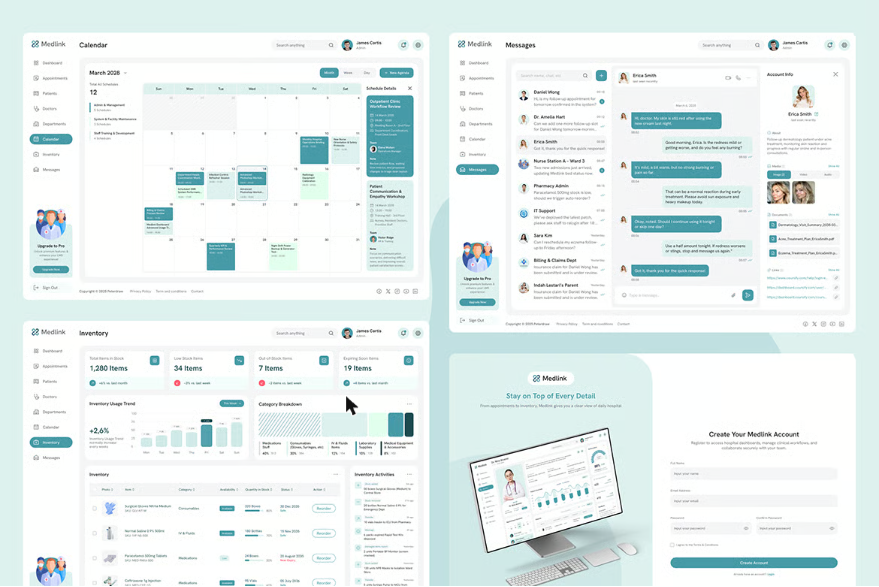
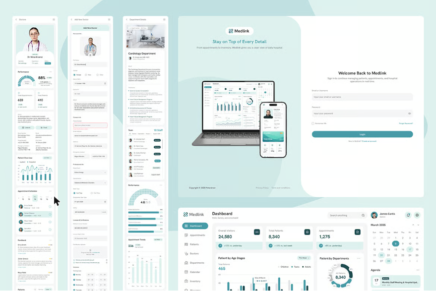
- KPI con icono en caja + delta en chip; barras agrupadas por edad con tabs; donut por departamento con total central; área chart Income/Expense con tooltip.
- Mini calendario + Agenda con fecha en badge; Doctor's Schedule; Recent Activity feed; lista Reports.
- Tablas con filtros (Gender, Age, Patient Type, Condition), chips de condición y estado (Discharged / In Treatment / Admitted), "Showing X of Y".
- Patient Details: header con datos, tiles de vitales, Medical info, Blood Pressure chart, Health Reports, Patient Note.
- Doctors grid de cards; Doctor Details con gauge 88 % + barras de métricas + feedback con estrellas; formulario Add New Doctor (inputs, radio, select, upload).
- Departments: barras apiladas por departamento + grid de cards con foto/equipo; Department Details con tabs de equipo y score 4.8/5.
- Calendario Month/Week/Day con panel lateral "Schedule Details"; Inventory con KPIs, tendencias, categoría y botón Reorder; Messages con lista + chat + panel de contacto.
- Login/Register con mockup; "Upgrade to Pro" en sidebar; Sign Out; footer con enlaces y redes; versiones tablet/móvil.
8Plantilla de panel de administración "ADMAX" (uicreativenet)
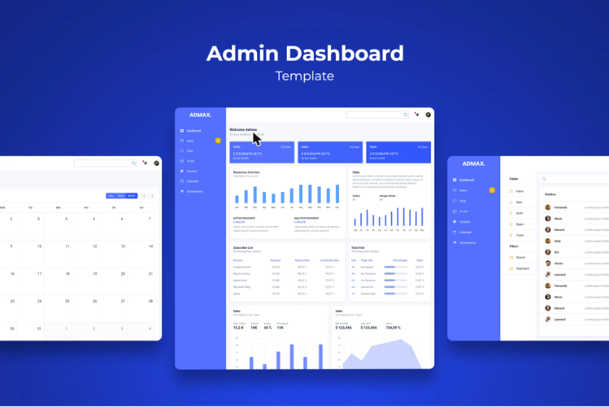
- Sidebar azul sólido; 3 KPI azules; calendario Day/Week/Month; Subscriber list; Total Visit con barras de progreso; módulo Inbox con carpetas; área chart degradado.
9EHR "Ehrity" — Landing de cronograma de pacientes (miraistoodio)
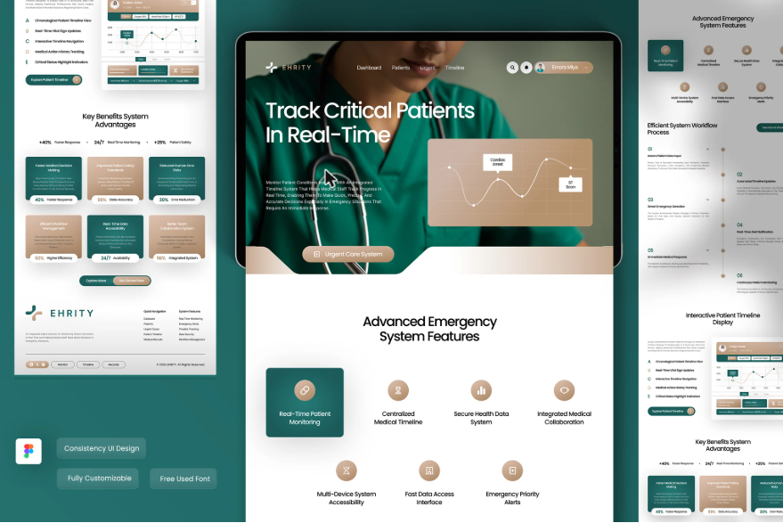
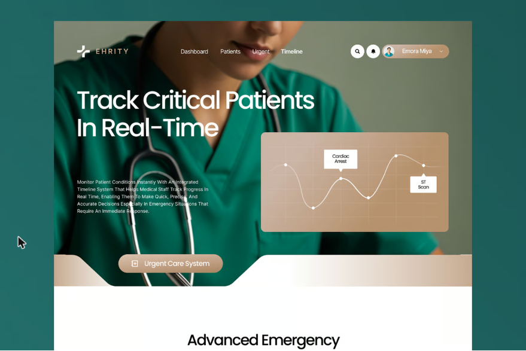
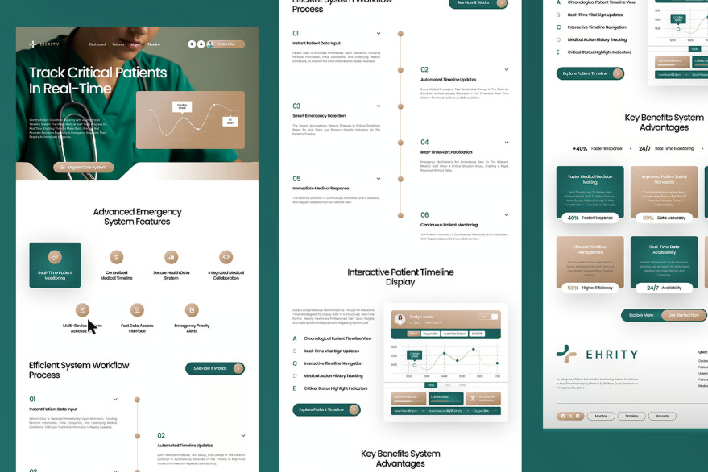
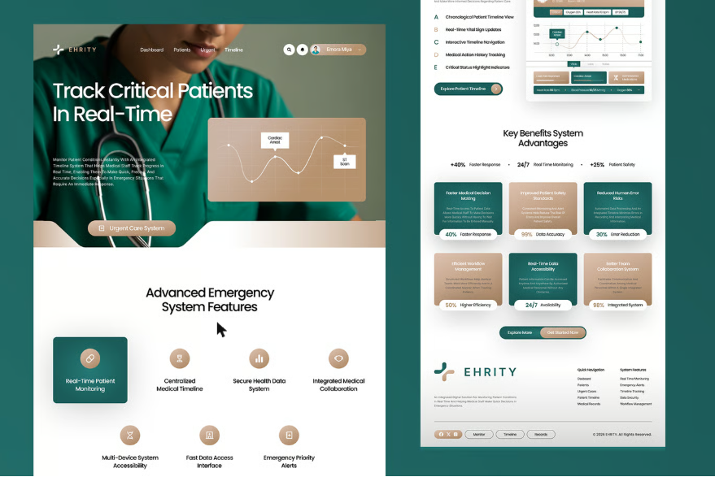
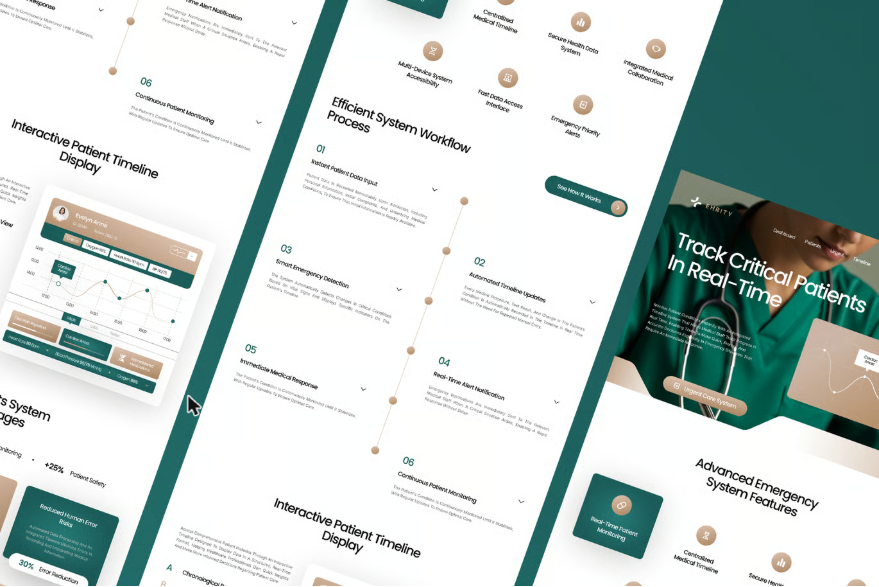
- Nav transparente sobre foto; hero con gráfica interactiva con tooltips y CTA píldora.
- Grid de features con icono en círculo (una resaltada); proceso numerado 01–06 con acordeones; lista A–E + mockup.
- Stats "+40 % · 24/7 · +25 %" y tarjetas de beneficio con % grande; footer con chips; paleta teal oscuro + crema.
10Interfaz de panel sanitario "Mediplus" (nanoagency)
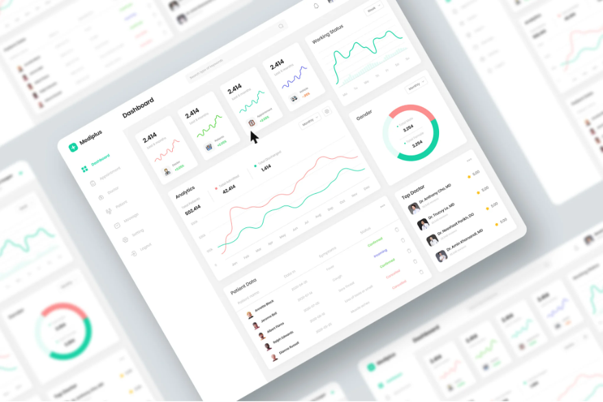
- 4 KPI con sparkline rojo/verde; Analytics de dos líneas; Working Status; donut Gender; Top Doctor con rating; Patient Data con estado en color.
11Kit de panel de análisis médico (creativewithjoy)
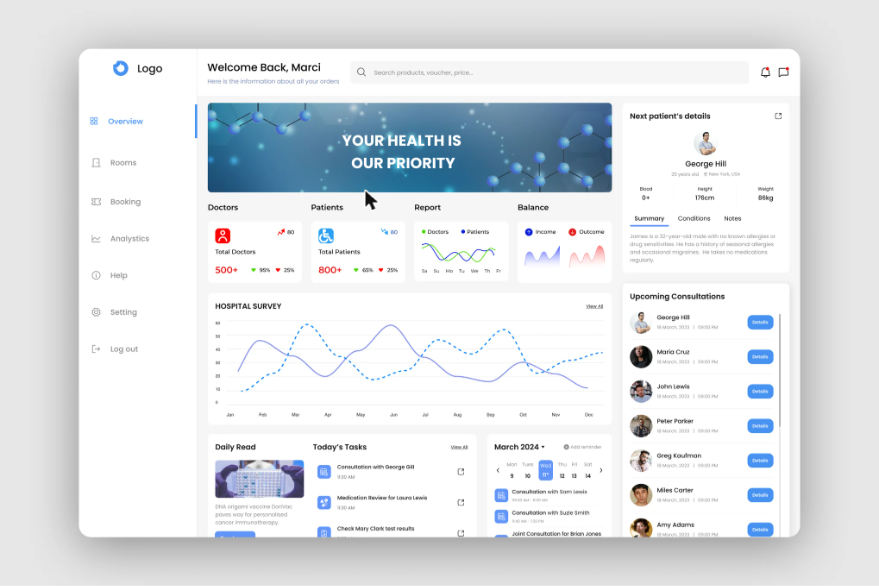
- Banner hero dentro del dashboard; tiles Doctors/Patients/Report/Balance con badge contador; Hospital Survey anual.
- Daily Read (lectura del día); Today's Tasks checklist; mini calendario semanal con eventos; panel derecho "Next patient's details" con tabs Summary/Conditions/Notes; Upcoming Consultations con Details.
12Plantilla de página de inicio médica (uicreativenet)
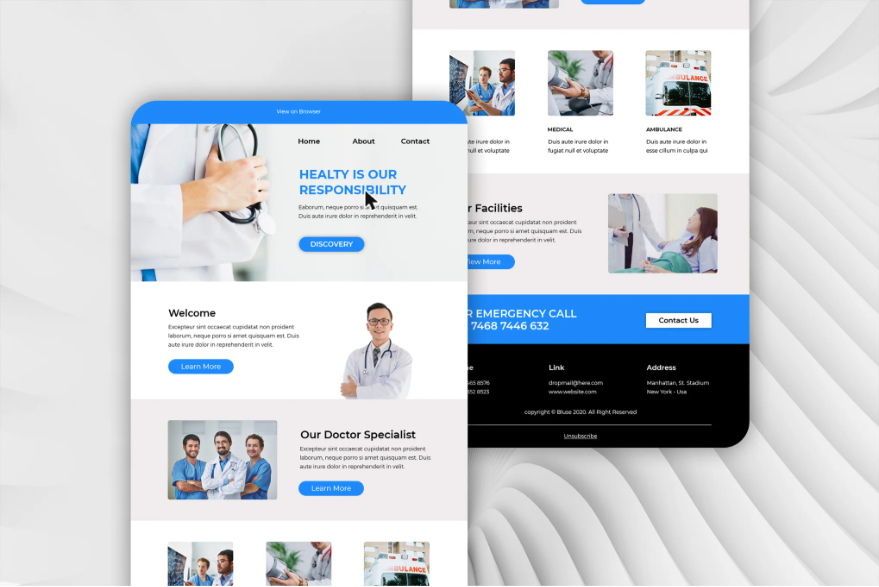
- Hero + CTA "Discovery", Welcome, Our Doctor Specialist, servicios en 3 columnas, Facilities, banda de emergencia con teléfono, footer oscuro.
13Panel de salud (arthgoods) — acento verde lima
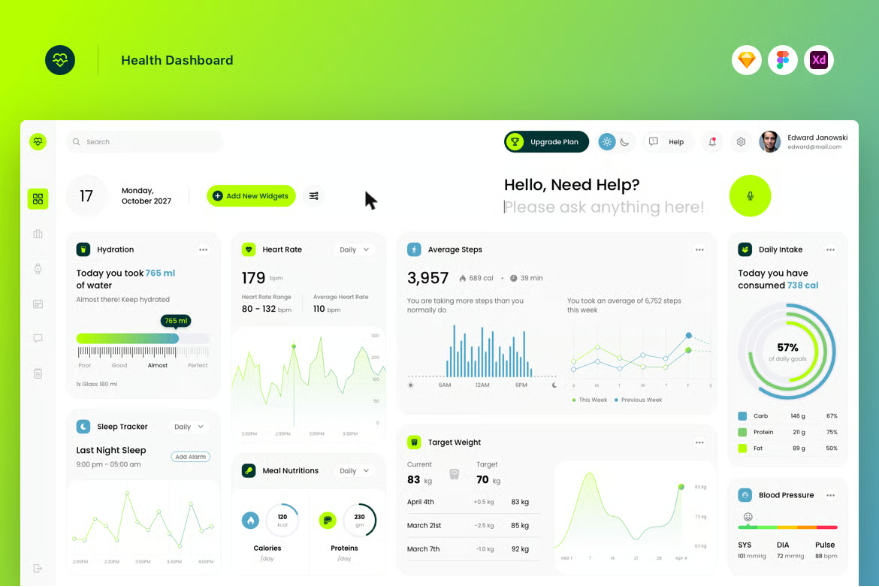
- Fecha grande en tarjeta + "Add New Widgets"; prompt de asistente IA con micrófono; Upgrade Plan; toggle claro/oscuro.
- Barra de progreso segmentada Poor/Good/Almost/Perfect con marcador; Heart Rate con rango; Average Steps con comparación semanal.
- Daily Intake donut con sub-barras %; Sleep Tracker; Meal Nutritions con anillos; Target Weight actual vs meta con historial; Blood Pressure barra de gradiente.
14Medicool — Landing de plataforma de análisis (sansdesign)
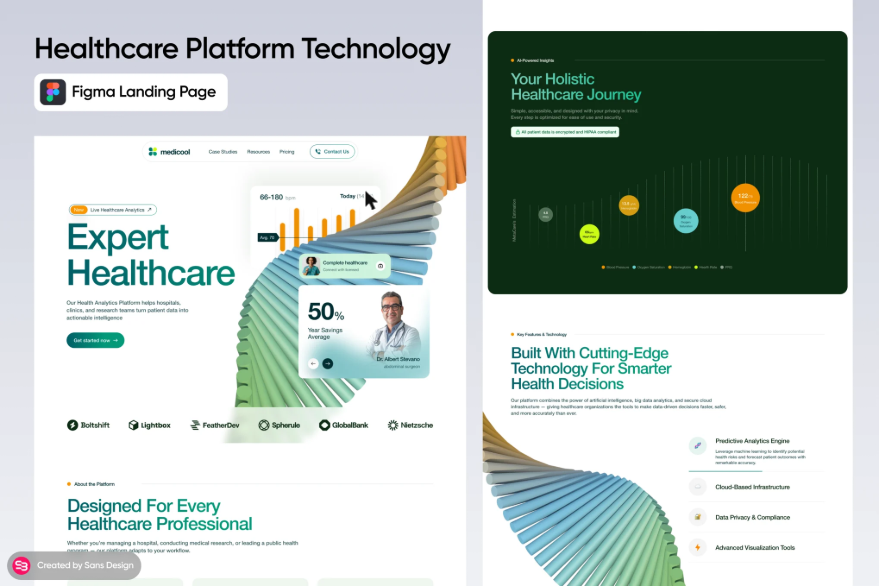
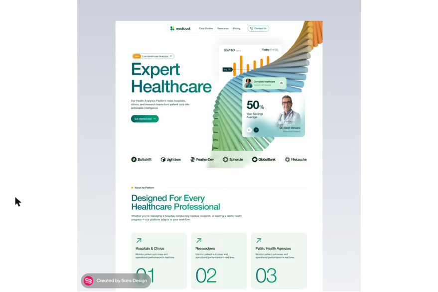
- Hero con titular enorme teal + visual 3D + tarjetas flotantes con mini-stats; chip "New · Live Analytics ↗"; logos monocromos.
- Tarjetas numeradas 01/02/03 por tipo de usuario; sección oscura con bubble chart y chip de seguridad; lista de features con icono.
15Ama — Landing de atención médica (C-Kav)
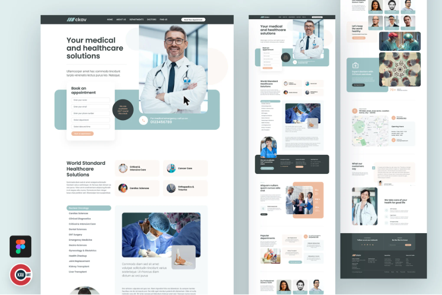
- Hero con formulario flotante "Book an appointment"; badge circular 24/7; lista lateral de departamentos con activo; cards de servicio; bloques foto + texto; team grid; testimonios; mapa + horarios; stats "70+"; footer oscuro.
16Folleto tríptico médico (print)
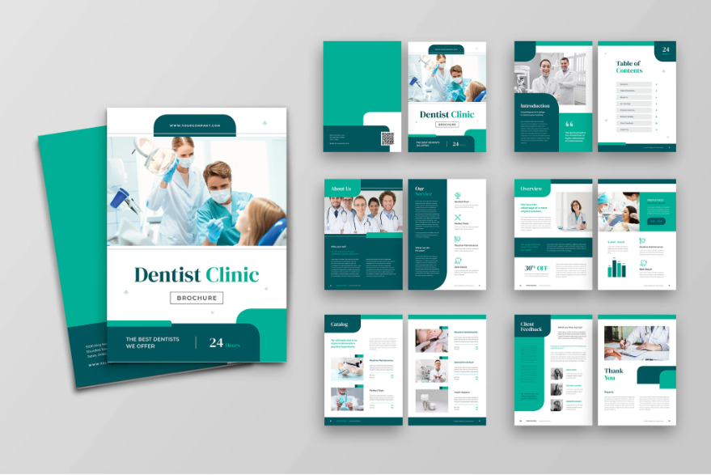
- Estructura TOC · Introducción · Overview · Servicios · Catálogo · Feedback · Thank you, útil para el PDF exportable de reporte o guía de estudio. Paleta teal + blanco con bloques redondeados.
17Resultados Envato "medical dashboard" (página 8)
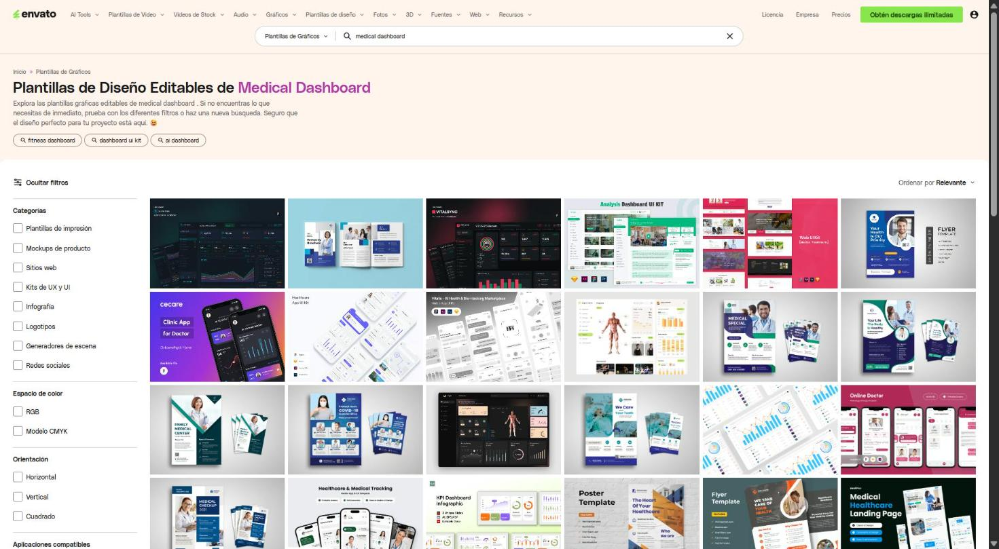
Mapa de adopción para ENARM
| Elemento de plantilla | Qué será en ENARM | Fuente |
|---|---|---|
| KPI cards con sparkline y delta | Preguntas hoy · Precisión % · Racha · Tarjetas pendientes | 1, 2, 4, 7, 10 |
| Dos sub-métricas en una card | Correctas / Incorrectas · Nuevas / Repasos | 1 |
| Chips con miniatura (X-Ray, CT, MRI) | Especialidades (MI, Pediatría, GyO, Cirugía…) | 1 |
| Sub-grid "tema → resultado" | Tema → nivel de dominio | 1 |
| Gauge semicircular con score | Índice global de preparación | 2, 7 |
| Barra de rango gradiente con marcador | Dominio por especialidad vs rango esperado | 2, 13 |
| Figura anatómica con hotspots | Mapa de sistemas/especialidades con estado | 2 |
| Tabla con chips de estado + filtros + paginación | Historial de sesiones / banco de preguntas | 1, 4, 5, 7 |
| Condition Guides + stepper | Plan de estudio por fases con progreso | 1 |
| Gráfica de rangos (Heart Rate) | Tiempo por pregunta / por sesión | 1 |
| Articles / Daily Read | Perla del día / resumen recomendado | 1, 11 |
| Chat / prompt de IA con micrófono | Tutor IA por pregunta | 1, 13 |
| Recommended Actions con botón Start | Acciones de estudio sugeridas | 2 |
| Upcoming con fecha en badge | Próximos repasos / simulacros | 2, 5, 7, 11 |
| Daily Habits con meta | Metas diarias (preguntas, minutos, tarjetas) | 2, 13 |
| Saludo + resumen en prosa | "Tienes 40 repasos hoy · 12 nuevos · 3 vencidos" | 3, 4 |
| Tarjetas LIVE con temporizador | Simulacro cronometrado en curso | 4 |
| Timeline vertical con puntos | Historial cronológico de estudio | 4, 9 |
| Active/Overdue | Repasos vencidos | 4 |
| Donut por departamento con % | Distribución de preguntas por especialidad | 7, 10, 13 |
| Barras agrupadas con tabs | Preguntas por dificultad / por semana | 7 |
| Patient Details | Ficha de tema: stats, notas, recursos, historial | 7 |
| Doctors grid / Doctor Details | Grid de especialidades con score y métricas | 7 |
| Calendario Month/Week/Day + panel lateral | Calendario de estudio y simulacros | 7, 8 |
| Formulario Add New Doctor | Formulario de perfil / plan de estudio | 7 |
| Login / Register con mockup | Acceso y registro | 7 |
| Upgrade to Pro / Upgrade Plan | ENARM Premium | 7, 13 |
| Forecast Issues (IA) | Predicción IA de temas en riesgo | 3 |
| Today's Tasks checklist | Tareas de estudio de hoy | 11 |
| Panel "Next patient's details" con tabs | Panel "Siguiente tema" (Resumen / Puntos clave / Notas) | 11 |
| Actual vs meta con historial de fechas | Precisión actual vs meta | 13 |
| Landing: hero 2 colores + CTA + logos + features + proceso 01–06 + stats + footer | Landing pública de ENARM | 6, 9, 14, 15 |
| Formulario flotante en hero | "Empieza gratis" / registro rápido | 15 |
| Tarjetas 01/02/03 por tipo de usuario | Primera vez · Repetidor · Residente | 14 |
| Modal con check verde | "Sesión completada" | 2 |
| Modo oscuro | Tema oscuro opcional | 2, 13 |
| Paleta blanco + gris claro + teal; radios 16–20 px | Sistema visual base | 1, 4, 7, 9 |